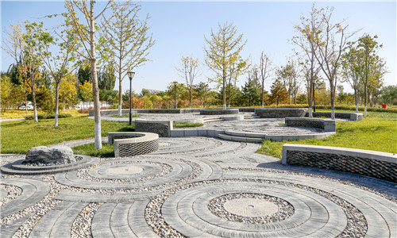
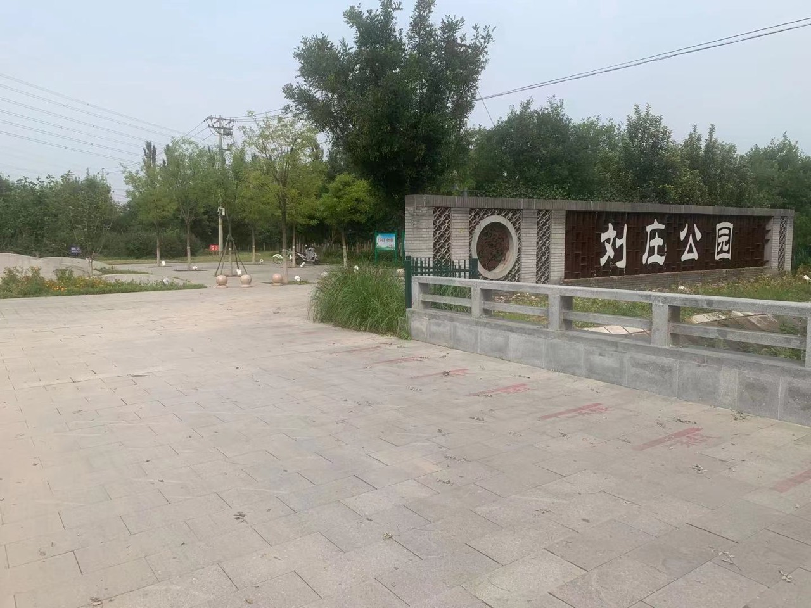
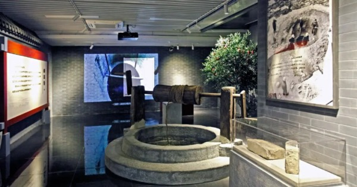

实景照片与摄影署名
照片及机械处理结果沿用各自标注的许可。保留原构图，仅按下列说明缩小和压缩。历史影像不代表当前开放、展览或季节；摄影者不因此为小程序背书。
大瓦窑公园

作品：大瓦窑公园瓦片圆形广场
摄影：未署名；来源：北京市园林绿化局(首都绿化委员会办公室)
拍摄日期（来源声明）：未标注（来源页面发布于2020-12-16）
来源与完整原图 · 官网转载条件：公共免费资料性引用并注明来源
大瓦窑公园瓦片圆形广场及园内绿化的历史实景；画面为官网2020年报道所用照片，不代表当前季节、设施或开放状态。摄影者及实际拍摄日期未单独标注；仅用于公共免费的地点资料介绍，按官网条件注明来源。
保留来源原图文件及原始尺寸，未放大、裁切、重绘或换背景。成品为500×300。页面按容器缩放、裁显，完整来源见链接。
永顺刘庄公园

作品：刘庄公园园名景墙与园区外观
摄影：未署名；来源：北京市园林绿化局(首都绿化委员会办公室)
拍摄日期（来源声明）：未标注（来源页面发布于2022-06-15）
来源与完整原图 · 官网转载条件：公共免费资料性引用并注明来源
通州区永顺镇刘庄公园园名景墙与园区外观的历史实景；不是其他同名公园，不作为指定导航入口，不代表当前设施或开放状态。摄影者及实际拍摄日期未单独标注；仅用于公共免费的地点资料介绍，按官网条件注明来源。
由来源原图等比例缩小，并进行JPEG压缩（质量参数72）；未放大、裁切、重绘、去人物或换背景。成品为1280×960。页面按容器缩放、裁显，完整来源见链接。
北京六必居博物馆

作品：北京六必居博物馆老井展陈实景
摄影：未署名；来源：北京市文物局
拍摄日期（来源声明）：未标注（来源报道发布于2024-08-26）
来源与完整原图 · 官网转载条件：注明来源且不改变原意
北京市西城区粮食店街3号六必居博物馆老井展陈的历史实景，来自报道中该馆独立段落；不代表当前展陈、开放或服务安排。摄影者及实际拍摄日期未单独标注，按官网条件保留来源。
将来源PNG转换为JPEG并进行压缩（质量参数72），保留600×315原始尺寸；未放大、裁切、重绘、去人物或换背景。页面按容器缩放、裁显，完整来源见链接。